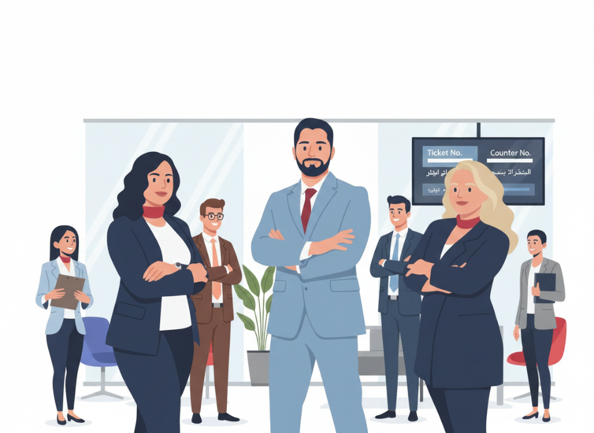

system contract management
Create a system contract management for auditing change order and tracking the contract budget .
15+ years simplifying complex operations and delivering results in Telecom & Business.
Experienced Social Media Marketing Manager with a demonstrated history of working in the IT industry. Skilled in Accounting, , IT Service Management, with a Bachelor's degree focused in Industrial Business Management from Dijlah University College
Leveraging cross-functional expertise in management, sales, and technology to build customer loyalty, optimize processes, and deliver quality.
Create a system contract management for auditing change order and tracking the contract budget .
Development the Activation Hotspot cards process (awarded a certificate of achievement) and customer service process model.
Pricing automation by build Microsoft Access database and update for account system.
Certified Internal Quality Auditor by COSQC, Iraq (Certificate No. 1557).

My achievement in this position : Create a system contract management for auditing change order and tracking the contract budget .
About the job :
My achievement in this position :
About the job :
My achievement in this position :
About the job :
My achievement in this position :
About the job :
About the job :
Bachelor’s degree, industrial business management 2011 – 2016